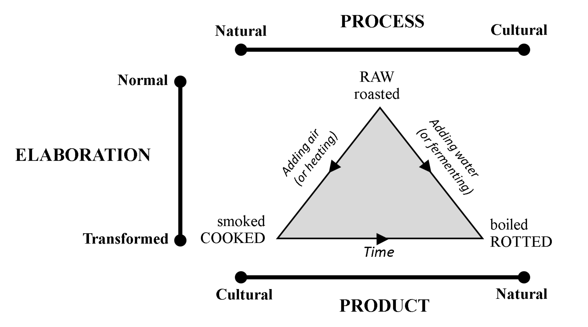
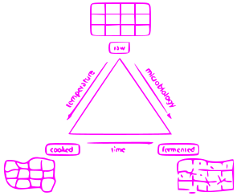

Semiotics:
Models
Dr Shane V Crowley
Press down for controls and right to progress
Interacting with the Slides
üì∫Full screen: press the F key
üéÆView video controls: hover cursor over video
üë©‚Äçüé® Draw: click icon or press C
üåàPen colour: press X to cycle and Y to revert
üíÅ Options and Info: click icon or press M
A link to the video wil be posted next week
Douglas' Food Codes
Douglas' Food Codes
Levi-Strauss' Triangle

Levi-Strauss' Triangle
Scientists are returning to this idea
In recent years there has been a growing skepticism of binary oppostions
We must be careful to distinguish opposition, negation and equivalence
Implicit health claims?
 Link: https://journals.sagepub.com/doi/full/10.1177/0743915618824332
Link: https://journals.sagepub.com/doi/full/10.1177/0743915618824332
Conclusion
Next week: Rhetoric
shane.crowley@ucc.ie